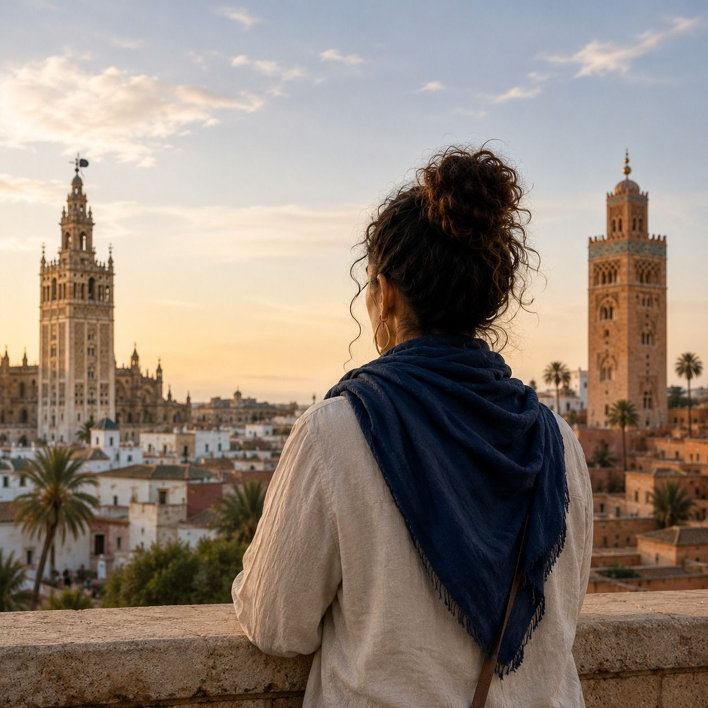

لا أعيش بين عالمين. أعيش حيث يلتقيان.
سوريا محمدي محمد · أخصائية نفسية · مرشدة اجتماعية مهنية · متخصصة في التعدد الثقافي وعمليات الهجرة

لا أعيش بين عالمين متعارضين. أعيش في المساحة التي يلتقيان فيها.
كان هناك وقت حاولت فيه أن أجد مكانًا أشعر فيه بالانتماء. في إسبانيا، كثيرًا ما جعلوني أشعر بأنني «المغربية». كان يكفي لقبي أو ملامحي أو تاريخ عائلتي حتى يقرر أحدهم، قبل أن يتعرف عليّ، أنني لست من هنا تمامًا. ومع مرور السنين، اكتشفت أن هذه التجربة يمكن أن تتكرر على الضفة الأخرى من البحر المتوسط. ففي المغرب، كنت بالنسبة لبعض الناس «الإسبانية». وكأن بناء حياتي في بلد آخر قد محا جزءًا من جذوري.
التوقف عن الحاجة إلى إثبات أي شيء
لوقت طويل، ظننت أنه يجب عليّ إثبات شيء ما. أن أشرح من أنا. أن أقنع البعض بأنني إسبانية أيضًا، والبعض الآخر بأنني ما زلت مغربية. اليوم لم أعد أشعر بتلك الحاجة. لقد فهمت أن الهوية لا تحتاج إلى أن يصادق عليها من لا يستطيعون فهم العالم إلا ضمن فئات مغلقة. لست أقل إسبانية لأنني أحافظ على جذوري. ولست أقل مغربية لأنني نشأت بين ثقافتين. ومع الوقت أدركت أنني لا أعيش بين عالمين متعارضين. أعيش في المساحة التي يلتقيان فيها.
ماذا يعني أن تكون مزدوج الثقافة
عندها اكتشفت مفهوم الازدواج الثقافي. الشخص مزدوج الثقافة هو من دمج ثقافتين في طريقة فهمه للعالم ولذاته. لا يعني ذلك الاضطرار إلى الاختيار بين هوية أو أخرى، بل بناء هوية خاصة تُثريها الثقافتان معًا.
نحن، الأشخاص مزدوجو الثقافة، جسور طبيعية. نصل بين ما قد يبدو للآخرين غير قابل للتوفيق. نفهم الرموز واللغات والعادات وطرق تفسير الواقع التي يُنظر إليها أحيانًا على أنها متضادة. ليس لأننا أشخاص استثنائيون، بل لأن تاريخنا الخاص علّمنا التعايش مع هذا التنوع.
أن تكون مزدوج الثقافة لا يعني أن تعيش منقسمًا. يعني أن تتعلم كيف تدمج. حيث يرى الآخرون حدودًا، يمكننا نحن أن نرى مساحات لقاء. وحيث يجد البعض مسافة، نتعرف نحن على أوجه التشابه. هذه القدرة لا تُلغي الصراعات ولا الاختلافات، لكنها تُسهّل الحوار والتفاهم والتعايش.
ليس كل المهاجرين مزدوجي الثقافة
كثيرًا ما يُفترض أن كل شخص مهاجر، أو كل ابن أو ابنة لمهاجرين، هو بالضرورة مزدوج الثقافة. لكن الأمر ليس كذلك دائمًا. فالازدواج الثقافي لا يعتمد فقط على مكان ولادة آبائنا ولا على فعل الهجرة نفسه. بل يُبنى من خلال التجربة: اللغة التي نتحدثها، والعلاقات التي نبنيها، والعادات التي نتبناها، وكيفية إسهام الثقافتين في تشكيل هويتنا.
هناك مهاجرون يحافظون بشكل أساسي على ثقافة المنشأ. وآخرون يدمجون أيضًا ثقافة البلد الذي يعيشون فيه. وبالمثل، هناك أبناء وبنات مهاجرين ينشؤون وهم يتماهون بشكل شبه حصري مع ثقافة واحدة، بينما يطور آخرون شعورًا عميقًا بالانتماء إلى الثقافتين معًا. لا توجد طريقة واحدة لتكون مزدوج الثقافة. كل قصة مختلفة.
جسور بين الأشخاص والمجتمعات والثقافات
ربما لهذا السبب يمكن للأشخاص مزدوجي الثقافة أن يسهموا في التقريب بين الأشخاص والمجتمعات والثقافات. نحن لا نترجم اللغات فقط؛ بل كثيرًا ما نساعد أيضًا في تفسير القيم وطرق التواصل والوسائل المختلفة لفهم الحياة. في مجتمعات تزداد تنوعًا يومًا بعد يوم، يمكن لهذه النظرة أن تصبح موردًا قيّمًا لبناء الثقة وتعزيز التعايش.
مثال بسيط جدًا: إسبانيا والمغرب
هناك مثال بسيط جدًا يلخّص كيف أعيش هذا الواقع. عندما تلعب إسبانيا والمغرب مباراة كرة قدم، يسألني كثيرون مع من أشجع. وكأن الاختيار أمر إلزامي. والحقيقة أنني لا أختار. أريد أن يفوز من يلعب بشكل أفضل في ذلك اليوم. إذا فازت إسبانيا، أفرح. وإذا فاز المغرب، أفرح أيضًا. وإذا خسر أي منهما، أشعر بذلك الحزن الصغير الذي يظهر حين لا يسير على ما يرام شيء هو أيضًا جزء منك.
لوقت طويل، ظننت أن هذا الشعور تناقض. أما اليوم، فأعيشه كامتياز. لست بحاجة إلى التخلي عن بلد لأحب الآخر. هويتي تتسع للاثنين معًا، لتاريخهما وثقافتهما وإنجازاتهما وتناقضاتهما أيضًا.
الانتماء دون طلب إذن
ربما لن أتمكن أبدًا من جعل الجميع يرونني بالطريقة نفسها. ولا بأس بذلك. لأن الانتماء لا يعتمد فقط على نظرة الآخرين. بل يعتمد أيضًا على التوقف عن طلب الإذن لتكون من أنت عليه. أعرف اليوم أنني لست بحاجة إلى الاختيار بين جزء مني وآخر. هويتي ليست تناقضًا؛ إنها مجموع. لست نصف أي شيء. أنا كليًا كلا الأمرين.
وإن كان هناك شيء تعلمته في هذا المسار، فهو أن الأشخاص مزدوجي الثقافة ليسوا مقدَّرًا لهم أن يعيشوا بين ضفتين، بل أن يصلوا بينهما. أن يُظهروا أنه من الممكن أن تحب ثقافتين دون أن تنتقص إحداهما من قيمة الأخرى. أن يتذكروا أن التنوع لا يجب أن يفرّق؛ بل يمكن أن يقرّب أيضًا. لأن المكان الذي ننتمي إليه أحيانًا لا يكون في بلد واحد. بل يكون، بالتحديد، في الجسر الذي نستطيع بناءه بين الاثنين.
سوريا محمدي محمد · أخصائية نفسية · مرشدة اجتماعية مهنية · متخصصة في التعدد الثقافي وعمليات الهجرة
هل ترغب/ين في التعرف على المزيد من القصص والتأملات لأشخاص مهاجرين في جزر الكناري؟
شاهد أصوات العالم